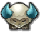
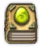
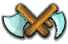
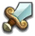

Dofus Ocre
Quête « L'éternelle moisson » : capture les archimonstres et les boss demandés, étape par étape. Coche-les au fur et à mesure.
Guide optimisé
Chaque personnage garde sa classe et sa propre progression dans les guides. Tout est enregistré dans ce navigateur : exporte un fichier pour le retrouver sur un autre appareil.
Connecte-toi pour retrouver tes personnages et ta progression sur tous tes appareils.
ou recevoir un lien de connexion par e-mail
Connecté avec .